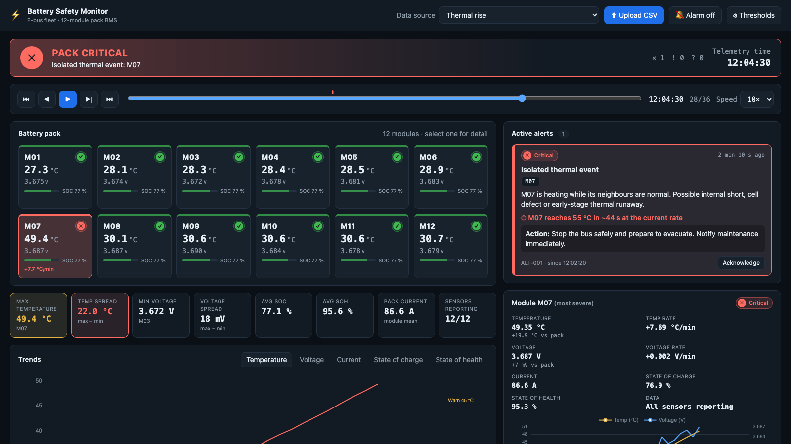
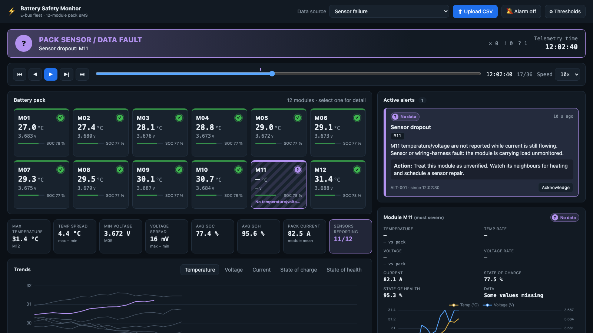
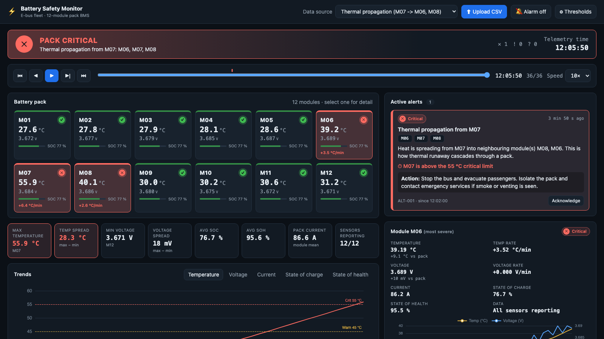
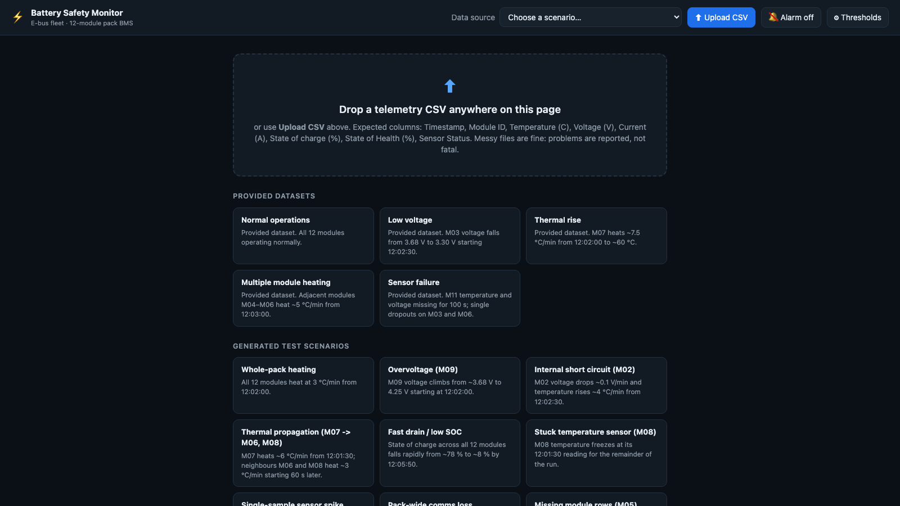

An interactive BMS dashboard that tells an electric-bus operator what is wrong, where, how soon it becomes critical, and what to do.
One glance at the screen, from across the room. No reading numbers.
Which of 12 modules, how fast it is getting worse, and when it becomes critical.
A diagnosis and a concrete action, not a raw threshold breach.
And the data cannot be trusted blindly. Sensors drop out, freeze and glitch. A broken sensor must not look like a fire, and a missing reading must not look safe.
Judging uses an unseen dataset with new anomalies, missing values and edge cases, so nothing can be tuned to the sample files.

State at time t uses only data up to t. Replaying a file is identical to watching it live.
src/core has no UI code, is tested in isolation (50 tests), and is cross-checked by an independent Python implementation.
Module IDs, count, sample interval and voltage level (cell vs module) are read from the data. All thresholds live in one config.
| Normal-data statistic | Worst case | Our limit |
|---|---|---|
| Temp deviation from pack median | 2.33 °C | 5 °C |
| Voltage deviation from median | 13 mV | 30 mV |
| Temperature rise rate | 0.86 °C/min | 2 °C/min |
| Voltage fall rate | 0.016 V/min | 0.05 V/min |
| Identical temp readings in a row | 2 | 6 = stuck |
| Identical voltage readings in a row | 4 | 9 = stuck |
| Fault | Relative rule fires | Fixed limit fires |
|---|---|---|
| M03 low voltage | +10 s | +2.5 min |
| M07 thermal rise | +40 s | +2 min |
| M04–M06 heating | +70 s | +2.8 min |
The safety backstop, from Li-ion datasheets. Catches whole-pack problems the relative view cannot.
Deviation from the median module at the same instant. Adapts to ambient temperature and load. One bad module cannot skew it.
30 s least-squares slope on real timestamps. Sees a runaway trend minutes before any limit.
| Check | Warning | Critical | Why |
|---|---|---|---|
| Temperature | 45 °C | 55 °C | Discharge limit 55–60 °C; degradation accelerates above ~45 °C |
| Cell voltage low / high | 3.40 / 4.15 V | 3.20 / 4.20 V | NMC cut-off ~3.0 V, charge limit 4.2 V |
| Temperature rise | 2 °C/min | 4 °C/min | 2.3× the normal maximum |
| SOH | 80 % | 70 % | Traction-battery end-of-life standard |
alerts on the normal dataset, at every timestamp
scenarios diagnosed as expected: 5 provided + 12 we generated
-999, corrupted ERR, single-sample spikes
| Pattern | Diagnosis |
|---|---|
| One module heating | Isolated thermal event |
| Heating + voltage falling | Internal short circuit |
| Adjacent modules together | Cooling failure |
| Neighbours start later | Thermal propagation from Mxx |
| Whole pack rising | Cooling / ambient / load |
| One module voltage dropping | Cell degradation / connection |
| T/V missing, current flowing | Sensor harness fault |

Dark, quiet base so colour is reserved for urgency. Healthy trend lines are grey; only troubled modules are coloured.
Every state has an icon and a word (✓ i ? ! ✕), so it is safe for colour-blind operators and readable on a projector.
Unacknowledged criticals pulse; acknowledging calms them. Optional audible alarm. Respects reduced-motion settings.
Modules shown in series order, so heat spreading between neighbours is visible on the map, not just in a list.
Banner → alerts → map → trends → log. The most important information is read first.
Acknowledge, replay, scrub to any alert, export the log, tune thresholds and re-analyse instantly.
| Scenario | Result |
|---|---|
| Normal operations | No alerts |
| Low voltage (M03) | Critical, 20 s after onset |
| Thermal rise (M07) | Critical at 30.6 °C, 20 s after onset |
| Multiple heating | One M04–M06 cluster alert |
| Sensor failure | Data fault, clears on recovery |
| Over-voltage · internal short | Diagnosed correctly |
| Propagation · pack-wide heating | Source module identified |
| Edge case | Result |
|---|---|
| Stuck sensor | Stuck-sensor data fault |
| Single-sample spike | Ignored, logged |
| Comms loss (all modules) | One alert, not 12 |
| Missing module rows | Dropout, no crash |
| Heating + sensor dropout | Alert kept through dropout |
| Corrupted / messy file | No false alarms, reported |
| Module-level voltage, 60 s cadence | Auto-adapts |
npm test) + independent Python reference detector: 19/19 checks agree.
Many buses side by side, ranked by risk, with drill-down into each pack.
The engine already processes frame by frame; connect it to a CAN/MQTT stream instead of a CSV.
Per-bus normal profiles and anomaly models on top of the explainable rules, never replacing them.
Real module positions and cooling loops, so adjacency and propagation use the true geometry.
Limitations: adjacency assumes series order; absolute limits assume NMC chemistry (editable); forecasts are linear extrapolations.
Catch the faulty module early, explain it clearly, and never cry wolf.
README · docs/DETECTION_LOGIC.md · docs/DATA_ANALYSIS.md · npm test